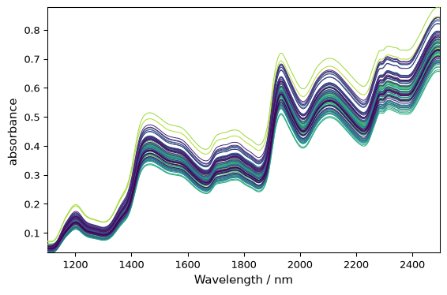
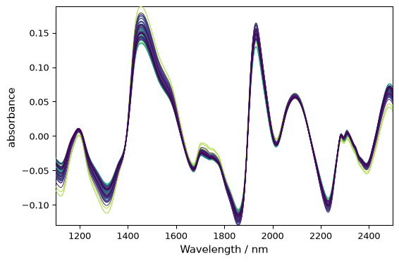
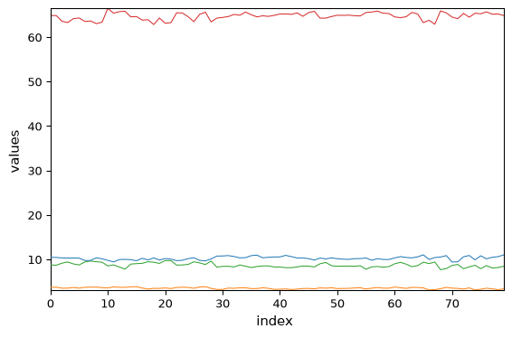
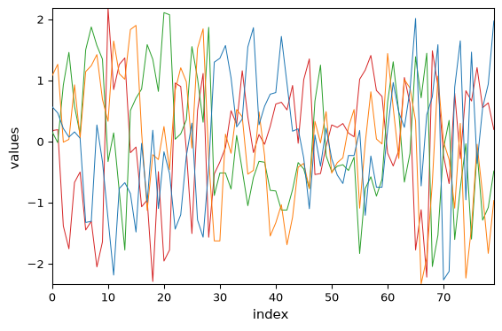
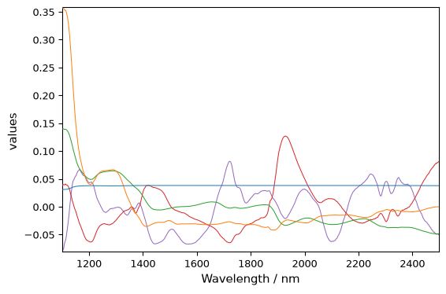
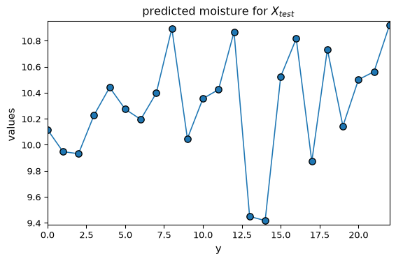
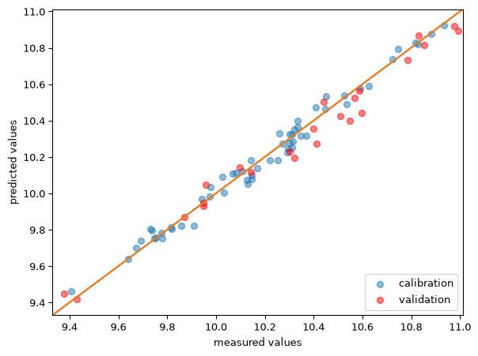

Partial Least Squares Regression (PLSRegression)
[1]:
import spectrochempy as scp
Introduction
PLSRegression (standing for Partial Least Squares regression ) is a statistical method to estimate \(n \times l\) dependant or predicted variables \(Y\) from \(n \times m\) explanatory or observed variables \(X\) by projecting both of them on new spaces spanned by \(k\) latent variables, according to the master equations :
\(S_X\) and \(S_Y\) are \(n \times k\) matrices often called score matrices, and \(L_X^T\) and \(L_Y^T\) are, respectively, \(k \times l\) and \(k \times m\) loading matrices. Matrices \(E_X\) and \(E_Y\) are the error terms or residuals. As indicated by the third equation, the decompositions of \(X\) and \(Y\) are made to maximise the covariance of the score matrices.
The implementation of PLSRegression in spectrochempy is based on the Scikit-Learn implementation of PLSRegression with similar methods and attributes on the one hand, and some that are specific to spectrochempy.
Loading of the dataset
Here we show how PLSRegression is implemented in Scpy on a dataset consisting of 80 samples of corn measured on 3 different NIR spectrometers, together with moisture, oil, protein and starch values for each of the samples. This dataset (and others) can be loaded from http://www.eigenvector.com.
[2]:
A = scp.read("http://www.eigenvector.com/data/Corn/corn.mat", merge=False)
INFO | The mat file contains an array of strings named 'information' which will not be converted to NDDataset
The .mat file contains 7 eigenvectors’s datasets which are thus returned in A as a list of 7 NDDatasets. We print the names and dimensions of these datasets:
[3]:
for a in A:
print(f"{a.name} : {a.shape}")
m5nbs : (3, 700)
mp5nbs : (4, 700)
mp6nbs : (4, 700)
propvals : (80, 4)
m5spec : (80, 700)
mp5spec : (80, 700)
mp6spec : (80, 700)
In this tutorial, we are first interested in the dataset named 'm5spec', corresponding to the 80 spectra on one of the instruments and 'propvals' giving the property values of the 80 corn samples.
Let’s name the specta NDDataset X , add few informations about the x-scale and plot it, before and after detrend:
[4]:
X = A[-3]
X.title = "absorbance"
X.x.title = "Wavelength"
X.x.units = "nm"
_ = X.plot(cmap=None)

[5]:
X_ = X.detrend()
_ = X_.plot(cmap=None)

Let’s plot the properties of the sample:
[6]:
Y = A[3]
_ = Y.T.plot(cmap=None, legend=Y.x.labels)

Standardization of the values allows better visualization:
[7]:
Y_std = (Y - Y.mean(dim=0)) / Y.std(dim=0)
_ = Y_std.T.plot(cmap=None, legend=Y.x.labels)

Running PLSRegression
First we select 57 first samples (2/3 of the total) to train/calibrate the model and the remaining ones to test/validate the model, and we restrict first our analysis to the moisture content:
[8]:
X_train = X[:57]
X_test = X[57:]
y_train = Y[:57, "Moisture"]
y_test = Y[57:, "Moisture"]
Then we create a PLSRegression object with 5 components and fit the train datasets:
[9]:
pls = scp.PLSRegression(n_components=5)
_ = pls.fit(X_train, y_train)
The scores and loading matrices are stored in the x_scores,x_loadings, y_scores and y_loadings attributes. Let’s for instance, plot the \(S_X\) matrix:
[10]:
_ = pls.x_loadings.plot()

Once fitted, the PLS model can be used to predict the property values of another dataset, for instance:
[11]:
y_test_hat = pls.predict(X_test)
_ = y_test_hat.T.plot(title="predicted moisture for $X_{test}$", marker="o")

We can generate a parity plot to compare the predicted and actual values, for both train set and test set.
[12]:
ax = pls.parityplot(label="calibration")
_ = pls.parityplot(y_test, y_test_hat, c="red", label="validation", clear=False)
_ = ax.legend(loc="lower right")

The goodness of fit (as expressed by R-squared) can also be obtained using the score() method. For the training dataset it is obtained by passing no arguments, while for validation datasets, \(X\) and \(Y\) must be passed.
[13]:
print(f"R-squared training dataset: {pls.score():.3}")
print(f"R-squared test dataset: {pls.score(X_test, y_test):.3}")
R-squared training dataset: 0.984
R-squared test dataset: 0.968
As expected, the goodness of fit is slightly lower for the validation than for the calibration.